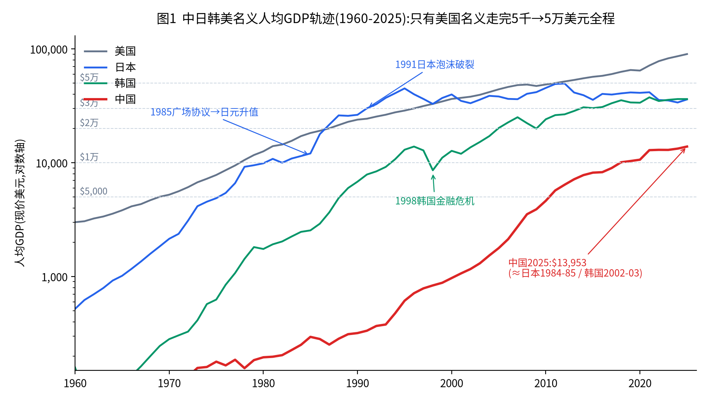
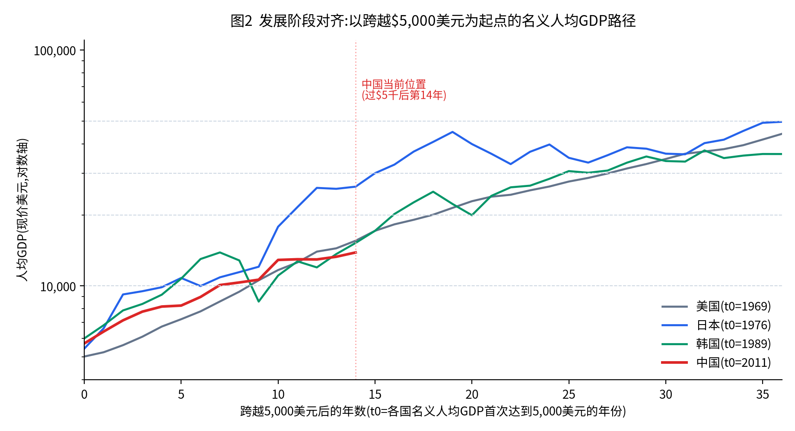
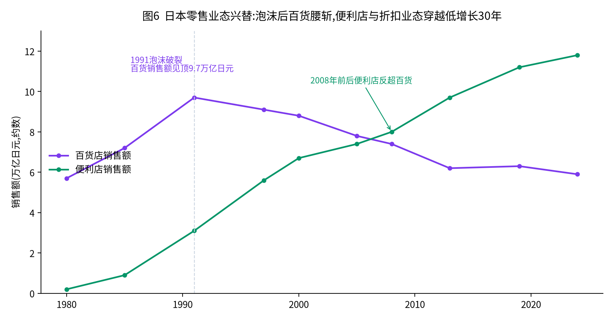
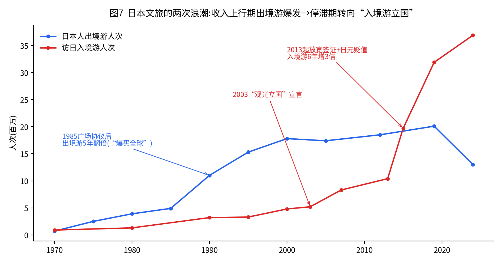
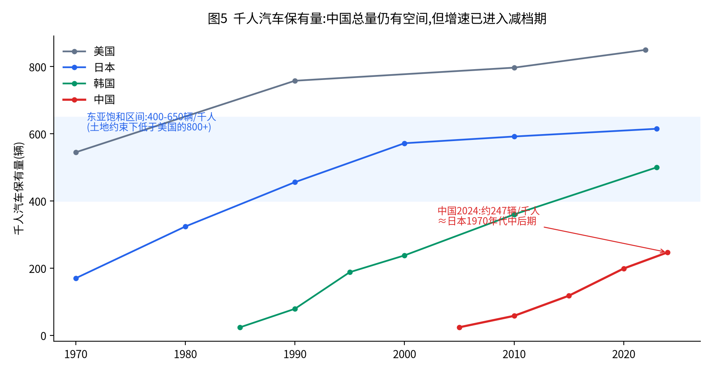
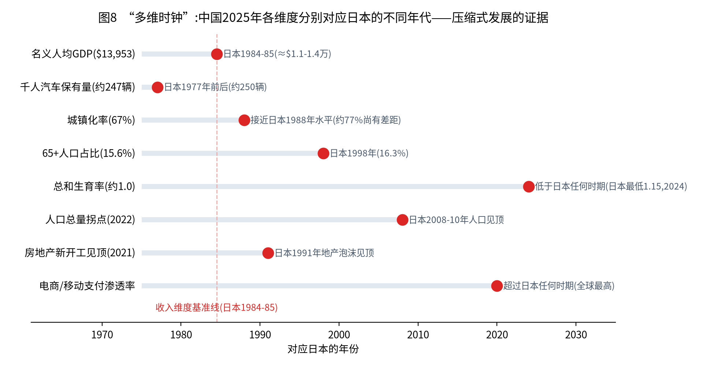
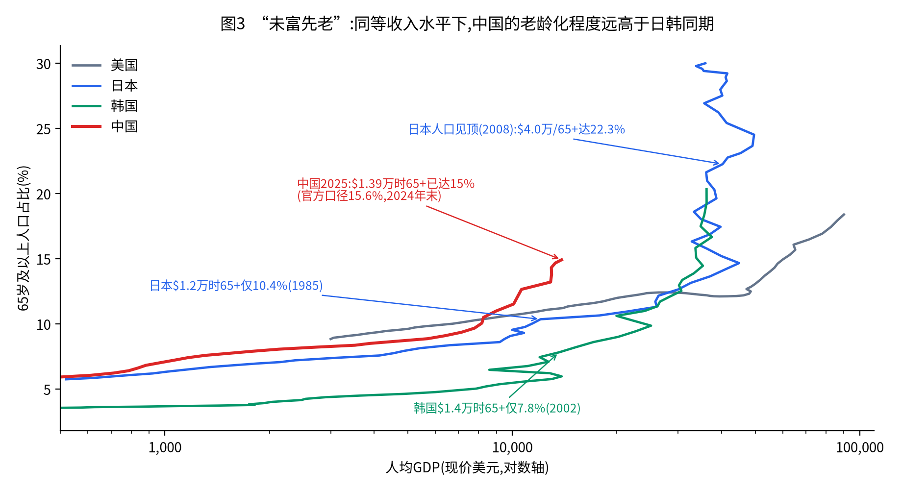
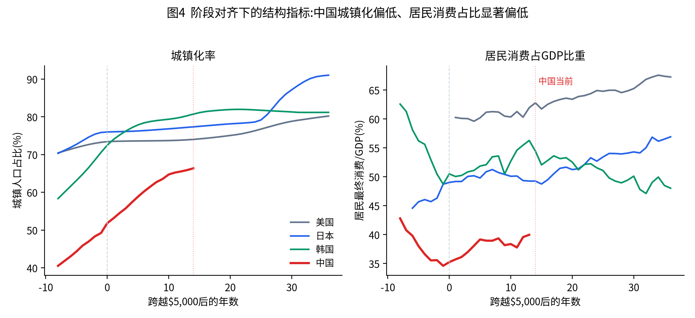

以现价美元衡量,四个经济体跨越各收入阈值的年份如下(世界银行WDI,2025年为最新值;中国2025年官方口径为13,953美元):
| 经济体 | ≥$5,000 | ≥$1万 | ≥$2万 | ≥$3万 | ≥$5万 | 2025年水平 |
|---|---|---|---|---|---|---|
| 美国 | 1969 | 1978 | 1987 | 1997 | 2011 | $90,027 |
| 日本 | 1976 | 1981 | 1987 | 1991 | 未达(1995年峰值$44,210) | $35,951 |
| 韩国 | 1989 | 1994 | 2005 | 2014 | 未达 | $36,227 |
| 中国 | 2011 | 2018-19 | — | — | — | $13,862(官方$13,953) |
两点必须先说明。其一,名义美元受汇率严重扭曲。日本1985-1988年名义人均GDP从1.1万美元跳升至2.6万美元,其中大半是广场协议后日元对美元升值(240→125)的贡献,而非真实生活水平在三年内翻倍;同理,日本2012年一度触及4.9万美元、2025年又跌回3.6万美元,均为汇率现象。其二,"$5千→$5万"名义全程只有美国跑完。因此本报告以名义阈值为叙事标尺,以购买力平价与结构指标(城镇化率、老龄化率、千人汽车保有量、三产占比)做交叉校准,将各国按"跨越同一阈值后的第N年"对齐比较。


跨时代比较必须扣除四类系统性差异,否则会得出机械结论:
| 不可比因素 | 内容 | 对结论的影响 |
|---|---|---|
| 技术时代差 | 互联网、智能手机、移动支付、电商在中国$5千阶段(2011)即开始普及;日本1976年、韩国1989年同阶段不存在 | 中国零售、媒介、金融业态的迭代被大幅压缩提前,不能用日韩同收入期业态推演中国 |
| 人口结构差 | 中国跨$1万时(2019)老龄化已达12.6%,日本跨$1万时(1981)仅9.6%、韩国(1994)仅5.8% | "未富先老"使养老、医疗、储蓄行为提前进入日韩更高收入阶段的形态 |
| 体量与全球化差 | 中国人口约为日本11倍、韩国27倍;中国崛起期恰逢全球化退潮与中美竞争,日韩崛起期受美国市场庇护 | 出口导向的"雁阵路径"对中国只能部分成立;内需纵深与区域梯度是中国独有变量 |
| 体制与土地制度差 | 土地公有+土地财政+户籍制度;政府对产业与城市开发的干预强度远超日韩 | 政府投资、住房与城市开发三章的日韩经验只能取"方向"不能取"节奏" |
综合三国经验,将$5千→$5万划分为四个阶段。下表是全报告的骨架,后续各章展开:
| 维度 | 阶段Ⅰ $5千-1万 大众消费起飞 日1976-81/韩1989-94/美1969-78/中2011-19 | 阶段Ⅱ $1-2万 升级与品牌化 日1981-87/韩1994-2005/美1978-87/中2019-今 | 阶段Ⅲ $2-3.5万 品质化与泡沫风险 日1987-93/韩2005-21/美1987-2002 | 阶段Ⅳ $3.5-5万 成熟与分化 日1993-95及其后/美2002-11 |
|---|---|---|---|---|
| 消费观念 | 数量与拥有;家电汽车普及;储蓄率高位 | 品牌与身份;名品热;消费信贷扩张 | 品质与体验;休闲消费;个性化 | 简约、二手、共享;性价比与意义并重;低欲望 |
| 教育观念 | 学历改变命运;升学率快速提升 | 考试军备竞赛;私教育产业爆发 | 高等教育普及化;文凭通胀;留学潮 | 少子化下"少而精";宽松与回摆;去学历化萌芽 |
| 娱乐内容 | 电视黄金期;录像带;街机 | 内容工业化:游戏、动漫、偶像起飞 | 内容出海成产业;主题公园;卡拉OK | 流媒体碎片化;宅文化;IP长尾;怀旧经济 |
| 汽车 | 普及期:千人50→250辆;经济型车 | 升级期:大型化、高端品牌诞生;出口摩擦 | 饱和前期:进口车热;RV/SUV兴起 | 饱和期:小型化(K-car)、二手车超新车、离车族 |
| 住房 | 新房大周期;新城建设;持家率上升 | 地价加速;换购改善;不动产金融化 | 泡沫与破裂;负资产;新开工见顶 | 存量时代:二手主导、空置率上升、旧改与租赁 |
| 商业零售 | 百货黄金期;GMS大卖场连锁扩张 | 便利店起飞;专业连锁;品类杀手 | 百货见顶;郊区购物中心;SPA模式 | 折扣店/百元店/二手店崛起;便利店饱和;电商补课 |
| 文旅酒店 | 国内游大众化;景点观光;团队游 | 出境游爆发;度假区开发热;主题公园 | 度假村泡沫破灭;深度游;温泉复兴 | 入境游立国;体验游;民宿;银发游 |
| 政府投资 | 交通能源基建高峰;新干线/高速路网 | 产业政策+科技;民营化改革 | 反周期公共工程;社保支出加速上行 | 社保占比三分之一;基建维护化;地方创生 |
| 城市开发 | 新城新区扩张;卧城;摊大饼 | 副都心与湾岸开发;轨道都市圈 | 泡沫期过度开发;都心空洞化 | 都心回归;城市更新;紧凑城市;收缩管理 |
注:阶段与年份为约数;韩国因1998年金融危机在阶段Ⅱ停留时间明显更长;美国各阶段特征受其大陆型消费社会影响,与东亚有系统差异,后文仅作标尺引用。
日本消费社会研究者三浦展将日本消费史划分为四个时代,与收入阶段高度对应,是本章的分析主轴:第二消费时代(1945-1974,家庭本位的大众消费,"三大件"普及)、第三消费时代(1975-2004,个人本位的品牌消费,"从家庭到个人")、第四消费时代(2005至今,共享、简约、本土回归,"从私有到共享、从品牌到品质")。以名义收入对照:第三消费时代大致覆盖$5千→$4万的上行全程,第四消费时代对应$3.5万以上的停滞期。
耐用品普及完成后(1975年彩电普及率超90%),消费重心转向差异化:私家车从家庭一台到人手一台,音响、单反相机、名牌服饰成为身份符号。便利店(7-Eleven日本一号店1974年开业)、家庭餐厅、快递(宅急便1976年开业)等"个人化基础设施"在这一区间成型。储蓄率仍在15-20%的高位,但消费信贷开始扩张。
广场协议后的日元升值+宽松货币,催生了人类消费史上罕见的奢侈品狂热:日本一国一度消化全球奢侈品销量的近一半,LV在日本的渗透率成为商学院经典案例;高尔夫会员证可以抵押贷款,东京出租车深夜挥金如土。"一亿总中流"(九成国民自认中产)在此期达到顶点。
泡沫破裂+就业冰河期,消费心态发生系统性切换:百元店大创、优衣库(1998年摇粒绒卖出2600万件)、无印良品、堂吉诃德在"失去的年代"高速成长;二手店(BOOKOFF、Mercari)把"用过的东西"变成主流;家计储蓄率从1970年代的20%以上一路降至2010年代的接近零(2014年一度为负)——不是不想存,而是收入不增。但同一时期,体验型消费(旅行、演出、餐饮)占比持续上升,"低欲望"其实是"对物低欲望、对体验和意义不低欲望"。
韩国在$1万附近(1996年加入OECD)出现第一轮名品热与海外游热,随即被1998年金融危机打断(人均GDP从$1.28万骤降至$8,573),全民"献金运动"式紧缩;2000-2002年政府鼓励信用卡消费刺激内需,酿成2003年信用卡危机(拖欠者近400万人)。此后韩国消费呈现鲜明的两极化:一方面人均奢侈品消费额多年位居全球第一(摩根士丹利2022年估算约325美元/人),另一方面"N抛世代"(抛弃恋爱、结婚、生育……)与"无支出挑战"流行。韩国证明:在高房价、高教育成本、高竞争社会中,"炫耀性消费"与"生存性节俭"可以在同一代人身上并存——这正是当下中国的镜像。
推演:未来10年中国消费的主旋律不是总量扩张而是结构再分配——商品消费向"极致性价比+极致情绪价值"两端集中(中间价格带塌陷,对照日本百货沉没、优衣库与LV两端胜出),服务消费(餐饮、文旅、健康、宠物、内容)占比持续上升。人均服务消费占比每提升1个百分点,约对应5000亿元级别的新市场。
| 阶段 | 时期 | 关键事实 |
|---|---|---|
| 新房大周期 | 1955-1973 | 住宅公团大规模建设团地;新开工1972年见顶,约186万户/年(历史峰值);持家率升至60%左右 |
| 平稳换购期 | 1974-1985 | 年新开工110-150万户;从"有房住"转向"住得好";二户目(第二居所)萌芽 |
| 泡沫期 | 1986-1991 | 东京商业地价5年涨约3倍;"卖掉皇居的地能买下整个加州";按揭出现百年贷、两代人贷 |
| 破裂与出清 | 1991-2005 | 六大都市地价指数从1991年峰值下跌超60%,连跌15年;银行不良债权约100万亿日元规模;辜朝明"资产负债表衰退":企业与家庭集体还债、不再借贷 |
| 存量时代 | 2005至今 | 新开工降至约80万户(2023);空置住宅约900万户、空置率13.8%(2023年住宅统计调查);都心塔楼回归与地方"负动产"并存;二手流通与旧改成为行业主业 |
韩国1988年奥运后房价飞涨,卢泰愚政府推出"住宅二百万户建设计划"(1988-1992),在首尔外围一次性规划盆唐、一山等五个一期新城,五年建成214万户——供给放量成功压制了房价,是政府大规模供给干预的经典正面案例(对照中国的保障房与"三大工程")。韩国特有的全租房制度(租客一次性押付房价50-80%的保证金、免月租)本质是民间住房金融杠杆,2020-2021年房价暴涨与2022-2023年"全租诈骗"潮,展示了住房金融创新的双刃剑。韩国家庭债务/GDP超过100%、居全球最高之列,是"高房价挤压消费与生育"的极端案例:首尔房价收入比超过20倍,与韩国0.7-0.8的全球最低生育率互为因果。
中国商品房销售面积2021年见顶(17.9亿平方米),2024年降至约9.7亿平方米,新开工较峰值下降约六成——调整发生在人均GDP仅$1.27万时,比日本(泡沫破裂时$2.9万)、韩国(2022年回调时$3.4万)早了一个收入台阶。与日本1991年的关键不同:①中国城镇化率67.89%(2025),仍低于日本1991年的77%,城镇化余量+改善需求提供了约8-10亿平方米/年的中枢支撑;②中国的调整由政策主动刺破+人口拐点驱动,金融体系未发生系统性危机;③保障房与城中村改造承接了部分建设产能(对照韩国两百万户模式)。
日本零售60年可概括为六轮接力,每一轮都精确对应收入阶段与人口结构的变化:
| 业态 | 兴起 | 见顶/转折 | 驱动逻辑 |
|---|---|---|---|
| 百货店 | 1950-60年代 | 1991年销售额峰值9.7万亿日元,其后腰斩至约6万亿 | 中产身份消费;泡沫破裂+郊区化+专业店分流后长衰 |
| GMS大卖场(大荣、伊藤洋华堂) | 1960-70年代("流通革命") | 大荣1972年超越三越登顶日本零售;2004年破产重组 | 大众家庭一站式购物;被品类杀手与便利店两头夹击 |
| 便利店 | 1974年7-Eleven一号店 | 至今约5.6万店、销售11.8万亿日元,2008年前后反超百货 | 单身化、老龄化、女性就业——"距离"战胜"价格" |
| 专业连锁/SPA | 1980-90年代 | 优衣库、宜得利、山田电机在通缩期登顶 | 低增长期"品质÷价格"最大化;制造零售一体化 |
| 折扣/百元店/二手 | 1990年代起 | 大创、堂吉诃德、BOOKOFF至今仍在成长 | 通缩30年的"消费降级基础设施";堂吉诃德连续30余年增收 |
| 郊区购物中心(永旺Mall) | 2000年代 | 2010年代后期饱和,地方店关店潮 | 汽车社会+家庭休闲;人口收缩后供给过剩 |

美国:区域购物中心1980年代达到顶峰,2000年代起"零售末日"(dead mall),但同期Costco、TJX(折扣百货)、Dollar General(美元店)持续跑赢——发达状态下零售的赢家永远是"极致效率"与"极致体验"两端。韩国:E-mart(1993)开启大卖场时代,2010年代Coupang以"火箭配送"实现电商反超,乐天/新世界百货依靠免税+奢侈品维持,而传统在来市场持续萎缩,路径与中国高度相似但节奏慢半拍。
中国用20年压缩了日本60年的业态史,且顺序被电商重排:百货(1990s-2012)→大卖场(1995-2016)→购物中心(2005至今,存量超6000座已明显过剩)→电商(2003至今,实物网零占社零26.1%,全球最高)→即时零售(2024-25年平台大战)→折扣化(零食量贩店三年开出3万家、奥莱与山姆/开市客会员店同时高增、胖东来现象)。

广场协议后日元购买力倍增,政府1987年推出"海外旅行倍增计划"(五年内出境游翻倍至1000万人次,提前达成),出境人次从1985年495万增至1996年1670万;日本游客的"爆买"重塑了全球免税与奢侈品零售格局(夏威夷、巴黎、香港专设日语导购)。该阶段精确对应人均GDP$1.5-4万区间——中国2010年代的出境游爆发(2019年1.55亿人次)是同一现象,当前中国出境游正在恢复中(2025年全口径出境1.68亿人次,含港澳台)。
小泉政府2003年发表"观光立国"宣言时,访日游客仅521万;2008年设观光厅;2013年起对东南亚放宽签证+日元大幅贬值,访日人次2013年1036万→2015年1974万→2019年3188万→2024年3687万,旅游消费超8万亿日元,成为仅次于汽车的第二大"出口产业"。入境游是日本失去30年中增长最快的产业,证明文旅可以脱离本国收入曲线、赚"全球收入增长"的钱。
日本酒店业态演进:城市大饭店(1960-80年代,身份场所)→商务酒店连锁(1980-2000年代,东横INN、APA,对应差旅大众化)→2010年代双向分化:胶囊/青旅承接入境背包客,星野集团等"生活方式度假"承接本国中产的体验升级,民宿2018年合法化。中国镜像:星级饭店(1990s-2000s)→经济型连锁(2005-2015,如家/汉庭)→中端连锁(2015至今,全季/亚朵,连锁化率仍不足45%)→当前度假与"生活方式"品牌起步,恰处日本2010年前后的位置。
中国2025年数据:国内出游65.2亿人次(+16.2%),入境游客1.55亿人次(+17.1%),入境花费1311亿美元(+39.2%)——入境游正处于日本2013-2015式的"政策放开+汇率有利"双击窗口(240小时过境免签持续扩容)。同时国内游呈"量增价缩"(参见本仓库《2026年暑期旅游市场报告》),是收入预期偏弱期的典型形态,对照日本90年代国内游的"安近短"(便宜、近处、短途)。
三国经验高度一致:教育军备竞赛在$5千-2万区间点燃并升级(学历回报率最高、白领岗位扩张最快的阶段),在$2-3.5万区间达到极限(文凭通胀+岗位增速放缓),此后随少子化与回报率下降而退潮或变形。
| 日本 | 韩国 | 中国 | |
|---|---|---|---|
| 竞赛升级期 | 1970-80年代"考试地狱"、偏差值体制;"塾"(补习班)产业化,通塾率过半 | 1980-2000年代"四当五落"(睡四小时考上、睡五小时落榜);大学升学率2008年达83.8%全球之最 | 2000-2020年:奥数、学区房、校外培训市值巅峰;高等教育毛入学率2003年17%→2024年60%+ |
| 极限与转折 | 2002年"宽松教育"改革→学力下降争议→2011年回摆;少子化下2000年代进入"大学全入时代",私立大学四成招不满 | 私教育费2023年约27万亿韩元创新高,占家庭支出全球最高;政府多轮打压(宵禁、公示)收效有限 | 2021年"双减"一刀切;考研报名2023年474万见顶后连续两年下降;考公热持续 |
| 退潮期形态 | 推荐入学/AO入学过半;职业专门学校复兴;"塾"转向素质与个性化 | 仍在极限区僵持:低生育率(0.75)与教育成本互为因果 | 进行中:素质教育、职业教育、教育出海、AI自学工具 |
日本内容产业的三级跳与收入阶段精确对应:$5千-1万(1976-1981):电视黄金期、街机(太空侵略者1978)、随身听(1979);$1-2万(1981-1987):内容工业化奠基——红白机(1983)、吉卜力(1985)、周刊少年JUMP黄金期、偶像工业成型;$2-4万(1987-1995):卡拉OK盒子巅峰(1994年参与人口近6000万)、J-pop CD销量1998年见顶(约6000亿日元)、游戏主机全球化;停滞期(1995后):内需萎缩倒逼出海,宝可梦(1996)成为史上最赚钱IP,动漫、游戏、IP授权成为出口支柱,"酷日本"战略(2010)事后追认。停滞期同时催生"宅经济"与"孤独经济":深夜动画、偶像地下化、二次元消费从亚文化变为主流。
韩国路径的特殊性在于政府先行:1998年金大中提出"文化立国",立法设立文化产业振兴基金(动因之一是意识到《侏罗纪公园》一部电影利润等于150万辆现代汽车出口)。此后25年:《冬季恋歌》(2002)打开日本→K-pop工业化体系(练习生制度)→《江南Style》(2012)→BTS/BLACKPINK→《寄生虫》(2019奥斯卡)、《鱿鱼游戏》(2021网飞全球第一)。韩国证明中等体量经济体可以把内容做成战略出口产业,其起跳点正是人均$1-1.5万。

普及期(千人50→250辆):日本1965-1977、韩国1988-2000、中国2010-2024。家用经济型车主导,自主品牌借内需规模崛起。升级期(250→450辆):日本1977-1990——大型化、个人第二辆车、高端品牌出海(1989年丰田创立雷克萨斯直接对标奔驰);同期日美贸易摩擦(1981年自愿出口限制)倒逼丰田本田赴美建厂,完成全球化。饱和期(450-620辆,东亚土地约束下低于美国的800+):日本1990年代后——K-car(轻自动车)份额升至新车近四成,二手车交易量超过新车,年轻人"离车"(驾照持有率下降),汽车从身份符号退化为工具或升华为玩具(改装、露营车文化)。
中国千人保有量约247辆(2024,3.53亿辆),恰在"普及完成、升级开始"的节点上,但三个变量使中国不会简单重走日本路径:①电智换轨:新能源渗透率已超50%,技术代差使自主品牌在升级期直接反超合资(对照:日本升级期是本土品牌向上,中国是本土品牌+换轨双重向上);②出海与摩擦:2023年中国超日本成为第一大汽车出口国(约490万辆),欧美关税战完全复刻1981年日美摩擦——日本的解法(本地化建厂+高端品牌)是现成剧本;③价格战:普及尾声+产能过剩=行业利润率压缩至4%上下,出清并购不可避免(日本从战后十余家整车厂整合为丰田/本田/日产三集团+轻车联盟)。
| 时期 | 财政/投资重心 | 标志 |
|---|---|---|
| 1960-1975 ($1千-5千) | 交通能源大基建 | 东海道新干线(1964)、名神/东名高速、田中角荣《日本列岛改造论》(1972) |
| 1975-1990 ($5千-2.5万) | 产业政策+民营化改革 | 超大规模集成电路计划(1976,官民共研);国铁、电电公社民营化(1985-87);整备新干线放缓 |
| 1990-2001 (泡沫后) | 反周期公共工程 | 累计百万亿日元级景气对策;公共事业费1998年达峰(含补正约15万亿);"造桥修路到无人村"、政府债务率飙升——公认低效 |
| 2001至今 | 社保吞噬财政+科技与地方创生 | 小泉改革腰斩公共事业费;社会保障关系费2024年37.7万亿日元,占一般会计约1/3;介护保险(2000)开办;地方创生(2014)、半导体补贴回归(2021,台积电熊本厂) |
韩国:1970年代重化工业投资→1990年代信息高速公路(全球宽带渗透第一,奠定游戏/互联网产业土壤)→2000年代行政首都世宗市与均衡发展→2010年代福利国家转型(免费保育、基础年金)。美国:1956州际公路→1980年代里根军研外溢(互联网前身)→2009年后基建欠账与《芯片法案》《IRA》的产业政策回归。共性:$2万以上,纯粹的"铁公基"让位于社保、科技与存量维护。
中国的财政重心切换正在发生且被债务约束加速:传统基建投资边际收益递减(高铁4.8万公里、高速19万公里已是全球最大网络),2023年起"一揽子化债"约束城投扩张;增量投向已转至"两重两新"、新基建(算力、特高压)、"三大工程";R&D强度2.80%(2025)已超欧盟均值,直追美日;社保医疗支出占比持续上行但人均水平仍低。推演:①未来十年中国财政的主叙事是"化债+社保补课+科技自立"三线并行,类似日本2001年后的结构但提前了一个收入台阶;②基建从新建转向维护更新(日本基建维护费2030年代将超新建,中国2035年前后到达同一节点);③"人的基建"(托育、教育、医疗、养老设施)是政治与经济双重必然,育儿补贴、免费学前教育已启动;④对市场主体:B端机会从"参与新建"转向"运营存量"(REITs、特许经营、设施管养)。
扩张期(1960-80年代):多摩、千里等大规模新城卧城+私铁沿线开发(东急模式:铁路+地产+商业一体,TOD的原型);泡沫期(1986-1991):湾岸与临海副都心豪赌、地方度假村滥开发;都心回归(1997-2010年代):泡沫后地价下跌+容积率放宽(2002年都市再生特别措置法),六本木新城(2003)、丸之内改造、都心塔楼公寓热,东京都人口不减反增;收缩管理(2010年代至今):增田宽也《地方消灭》(2014)预警896个市町村可能消失;富山市紧凑城市(LRT+"团子与串"结构)成为收缩治理范本;涩谷站城一体改造(2012-2027)代表存量再开发的最高形态;空置屋900万户成为国家级难题。
一期新城(盆唐、一山等,1989-1996)成功平抑房价但制造了首尔单极化;世宗行政城市(2007年动工)与革新城市试图强行再平衡,效果有限——首尔圈人口占比仍超50%且继续上升;清溪川复原(2005)与城市再生New Deal(2017)标志从拆建到更新的转向。启示:行政力量搬迁机构容易,改变人口用脚投票极难;单极化是东亚都市化的默认结局。

若只看名义人均GDP,中国2025年($13,953)相当于日本1984-85年、韩国2002-03年;但逐维度对齐后,时钟严重错位:汽车保有量还在"日本1977年",老龄化已到"日本1998年",人口总量拐点对应"日本2008年",地产新开工见顶对应"日本1991年",数字化则超过日本任何时期。"压缩式发展"的本质是:别国依次经历的阶段,中国叠加同时经历。

同等收入水平下,中国的老龄化程度约领先日韩同期8-10个百分点。这意味着:①养老金与医疗的财政压力在更低收入水平上到来;②劳动力成本优势消退更早,产业升级窗口更紧;③银发产业的市场成熟度将提前于收入水平(日本介护产业在$4万时成型,中国将在$2万前后被倒逼成型)。韩国的今天是更极端的预警:生育率0.75、2025年正式进入超老龄社会(65+超20%),而其收入仅为日本峰值的八成。

阶段对齐后可见两点:①中国城镇化率(67.89%)比日韩同阶段低约10个百分点,户籍与土地制度使"人的城镇化"滞后于"地的城镇化"——这是相对日韩的最大剩余红利;②中国居民消费占GDP约40%,比日韩同阶段低10-15个百分点,为全球主要经济体最低之列。这既是失衡,也是政策明牌:居民消费占比向50%回归的过程,就是未来十年服务业与消费行业的贝塔。
| 特殊性 | 事实 | 含义 |
|---|---|---|
| ①未富先老 | 人口2022年起负增长(2025年-339万),彼时人均GDP仅$1.27万;日本人口见顶时$4万 | 阶段Ⅲ/Ⅳ的人口特征提前进入阶段Ⅱ的经济体 |
| ②数字化超前 | 实物网零占社零26.1%、移动支付渗透率全球第一 | 零售/媒介/金融业态不能按日韩同期推演,已"抢跑" |
| ③地产周期提前见顶 | 销售/新开工2021年见顶于$1.27万,日本见顶于$2.9万 | 居民资产负债表修复期与收入爬坡期重叠,压制消费弹性 |
| ④区域四阶段并存 | 京沪人均GDP超$2.8万(阶段Ⅲ),多省低于$8千(阶段Ⅰ) | 一切行业结论必须分城市层级给出;下沉市场是"时间机器" |
| ⑤压缩式发展 | 升级(首购、品牌化)与降级(折扣、二手)同屏出现 | 企业需双品牌/双价格带作战,单一定位失效 |
| ⑥体制变量 | 土地财政转型、产业政策强度、监管周期 | 决定节奏与形态,日韩经验取方向、不取时刻表 |
| # | 趋势 | 对标坐标 | 确定性依据 |
|---|---|---|---|
| 1 | 银发经济主流化:养老、介护、慢病管理、银发消费与旅游 | 日本1995-2010 | 人口结构已锁定;60后"新老人"有钱有闲有数字能力 |
| 2 | 存量时代全面到来:二手房/二手车/二手商品、城市更新、设施维护运营 | 日本1995后 | 各类资产新增量均已见顶,存量规模全球第一 |
| 3 | 服务消费占比抬升:餐饮、文旅、健康、内容对商品消费的持续替代 | 日本1980s-90s/美国全程 | 恩格尔系数29.3%仍有下行空间;政策明牌 |
| 4 | 消费两端化:极致性价比(折扣、会员店、白牌)+极致情绪价值(IP、悦己、体验)并行,中间塌陷 | 日本1991后+韩国2010s | 收入预期弱+个体化,两端逻辑均已被验证 |
| 5 | 一人经济:单身2.4亿+户均规模2.6人以下:小型化住宅、单人餐饮、宠物、陪伴内容 | 日本2000s | 婚育率走势锁定;便利店/宠物/小家电已先行验证 |
| 6 | 内容与品牌出海黄金窗口:游戏、短剧、IP、新消费品牌、汽车 | 日本1980s/韩国2000s | $1-2万起跳规律+已有头部案例;地缘摩擦是节奏变量 |
| 7 | 入境游十年窗口:免签扩容+人民币汇率+基础设施冗余 | 日本2013-2019 | 2025年+39%的花费增速;政策与供给同向 |
| 8 | 财政从物到人:社保/托育/医疗补课,基建转维护,化债长期化 | 日本2001后 | 债务与人口双约束下无第二条路 |
| 9 | 都市圈集聚+收缩治理并存:人口向10大都市圈集中,收缩城市精明收缩 | 日本2010s/韩国全程 | 人口负增长下的空间再分配是算术必然 |
①汇率是名义叙事的最大变量:日元两次大幅升值制造了日本的名义"暴富"与后来的失落感;人民币若进入升值通道,中国名义美元收入的爬坡会显著快于实际感受,反之亦然。②AI是所有历史类比的"剧透变量":日韩的服务业就业吸纳路径(零售、餐饮、介护)可能被AI与机器人部分截断,也可能创造中国版"生产率奇迹",这是1980年代日本面对的所不存在的分叉。③规模即例外:14亿人的内需纵深使中国可以同时是"成本最低的生产者"和"最大的消费市场",日韩式"内需见顶必须出海"的紧迫性对中国头部行业成立、对本土服务业不成立。
| 行业 | 未来5-15年重点关注趋势 | 对标案例 |
|---|---|---|
| 汽车 | ①行业出清与3-5家超级集团化;②出海本地化建厂与高端品牌培育;③二手车/后市场规模翻倍;④智能驾驶重构"保有"概念;⑤2035年前后的"K-car时刻"(老人代步、小型化) | 丰田1980s全球化;日本二手/新车1.4:1 |
| 住房不动产 | ①二手主导的存量服务链(经纪、翻新、家装);②保租房与REITs扩容;③物业/设施管理长牛;④都市圈核心资产与收缩城市"负动产"极端分化;⑤"好房子"品质改善是新房唯一增量逻辑 | 日本1995后存量化;韩国两百万户供给干预 |
| 商业零售 | ①硬折扣与会员店十年深耕期;②购物中心体验化改造与过剩出清;③即时零售融合便利店场景;④二手循环经济(闲鱼、转转)主流化;⑤县域连锁化下半场 | 堂吉诃德30年增收;Costco/TJX穿越周期 |
| 文旅酒店 | ①入境游产业链(支付/免税/目的地营销)十年窗口;②县域游与微度假常态化;③中端酒店连锁化率向70%提升;④银发游与研学结构性增量;⑤警惕文旅地产存量风险,拒绝"リゾート法式"开发 | 日本观光立国2003-2024;星野集团 |
| 教育 | ①素质/职业/成人再教育替代K12学科;②2034年后高考人数腰斩引发高校出清;③教育出海与留学再配置;④AI个性化学习重构教培成本结构;⑤银发教育蓝海 | 日本大学全入时代;韩国私教育极限 |
| 娱乐内容 | ①IP工业化全链条(内容→衍生→场景)是十年主线;②游戏/短剧/网文出海窗口;③线下体验(演出、电竞、沉浸式)高增长;④AI内容与虚拟陪伴;⑤"孤独经济"与怀旧经济 | 宝可梦IP模式;韩国文化立国1998 |
| 大健康养老 | ①中国版"介护保险"制度落地节奏(长护险试点扩面)是行业总开关;②居家养老服务与适老化改造先行;③康复辅具、认知症照护、养老机器人;④慢病管理与银发健康消费;⑤医疗资源向县域下沉 | 日本介护保险2000年开办后产业十倍化 |
| 政府城投 | ①从土地财政转向"税收+运营+股权"三支柱;②基础设施REITs与特许经营盘活;③设施维护管养市场兴起;④数据/算力等新基建的政府采购;⑤化债背景下公共服务市场化外包 | 日本公共事业费腰斩与民营化;美国市政维护市场 |
从5千到5万美元,发达国家用了35-42年;这段路的前半程靠"造东西、修房子、买东西",后半程靠"服务人、陪伴人、照护人"。中国正站在前后半程的换挡点上,且因为人口与资产周期的提前,换挡比日韩来得更早、更急。对政策制定者,日本90年代证明了"用上半场的工具打下半场的仗"注定低效;对企业,日本的优衣库、堂吉诃德、星野、任天堂证明了下半场同样能诞生世界级公司——条件是彻底转向效率、体验与人。
口径说明:文中标注"约"或"约数"的数字为多来源整理的近似值,用于刻画量级与趋势;各国阈值跨越年份以世界银行现价美元口径为准,与各国本币口径或官方口径可能存在±1年差异。图5-图7所用日韩历史数据为公开统计的整理约数,精确到量级与拐点年份。